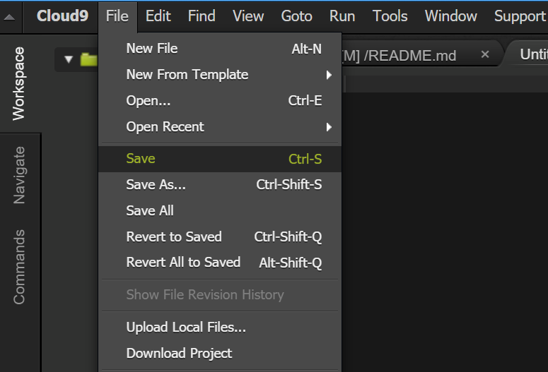

Do Now: Log Into Cloud9
- Go to https://c9.io
- Click the Github logo in the upper left.

- Enter your GitHub username/password
Integrated Development Environment
Imagine if... you were building a wood box.
You had to go to one room to get the saw. Then, another room to get the wood. And another room to get the screws... And another room to get the screwdriver!
Wouldn't it be easier if everything was one place?
Integrated Development Environment
An IDE is an Integrated Development Environment.
It collects all the tools for a developer in one place.
As we design more complicated projects, an IDE will make our lives easier.
Cloud9 is our IDE!
Cloud9
- Cloud9 organizes each project as a workspace.
- Workspaces contain all the files for our project.
- Workspaces are public, so don't put anything private in them!
- Always use your Github account to log into Cloud9
Cloud9
Now we will move our MadLibs project to Cloud9.
We will:
- Create a new workspace.
- Create a new page.
- Preview our page.
Create a New Workspace
Create a New File

Copy your MadLibs assignment
Open your MadLibs page and copy the HTML into the new file.
If you haven't started on one yet, use this JSBin:
http://jsbin.com/luheqo/edit
Save File

Live Preview
It's Broken!
We didn't add the Javascript!
Let's:
- Copy the Javascript into a new file in Cloud9 called madlibs.js
- Include the Javascript in our webpage
(Hint: Try placing a "script" tag inside the "head" tag with a "src" attribute set to the script file name!) - Test to make sure it works!
Source Code Management
What if you couldn't undo!?
Programmers make mistakes!
We keep old versions of our code to refer to later.
Source Code Management
How do you share files?
When you are in a team, everyone needs to stay in sync.
It's not easy to share files and avoid stepping on eachother's toes!
Source Code Management
What happens when multiple people work on the same file?
You can do it like a group project - everyone contributes their part and it is all combined at the end.
When you are working on hundreds of files, you need the computer to help combine the changes!
Source Code Management
We need something that...
- stores all the versions of our source code.
- shares our source code with our team
- combines our team's work together
A Source Code Management system (SCM)!
Git
The SCM we will use is called Git.
In Git, there are a few terms to learn:
- "repository": a collection of all your source code with all the versions
- "commit": a saved version of changes to your source code
- "clone": make a copy of the repository
- "merge": combine changes from two different repositories into one
Github
Now we have a way to clone repositories and merge them.
We need a way to keep a "master" copy of our repository that people can access.
That is what Github does!
How to Use Git
- You need the command line
- Instead of clicking on things, you type commands
- After you type the command, press enter
- The results of the command appear below!
Git Commands
- git init - create a new repository
- git status - see what is being tracked and not tracked
- git add <filename> - track file
- git commit -m "message" - commit changes